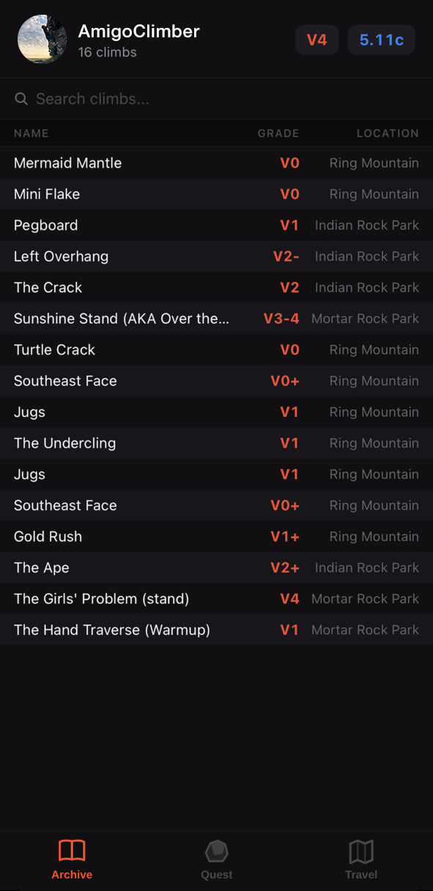
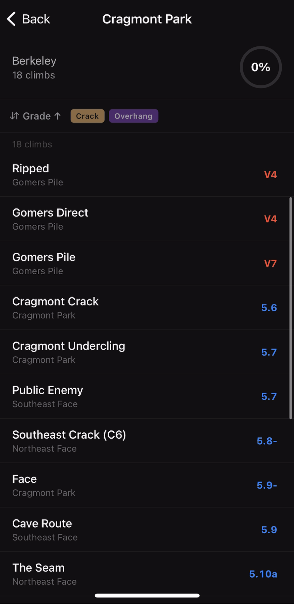
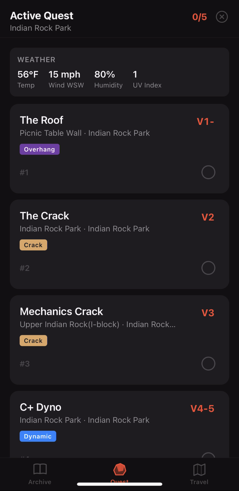
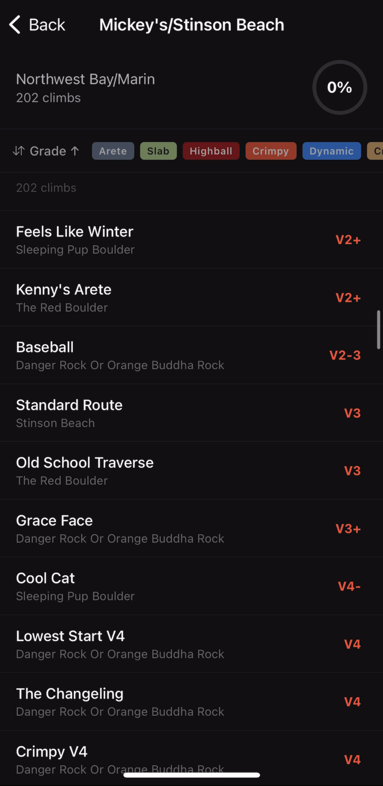

The digital climbing 'tickbook' for tracking and planning your climbing growth. Weather conditions are automatically synced at the time of send submission. Gamified climbing quests can be generated based on where you want to climb, desired climbing techniques, and further custom information.


Reference your personal collection of sent climbs in a complete digital logbook. Climbs can be filtered by grade, technique, or location, and you can track weather conditions or total sends for each route when logged on the app. This allows a climber to take a deeper look at their climbing style with regard to technique or weather conditions that may impact their success in various parts of the world. Show off your collection and track progress to share with friends.

Generate a climbing session tailored to your skill level that factors in your climbing grade limitations and variety of prior climbs. 'Growth Mode' will tune your climbing session to end on your absolute limits, while 'Chill Mode' will tune your session to enjoy more climbs without pressing too hard into your highest grade. The Quest generation asks in advance for the time available, any injuries to account for, and techniques that may be avoided in previous climbs or desired in future planned climbs.

Browse crags across each region and mark individual routes on your planned climbing list, improving your quest generation at other crags to tailor towards your project or upcoming plans. The Travel Planner will track the completion for every climb you have sent at each crag and update your completed percentage. Find climbs in your area that you might be overlooking and filter by technique to make sure you're not missing anything when setting your goals for the climbing season!